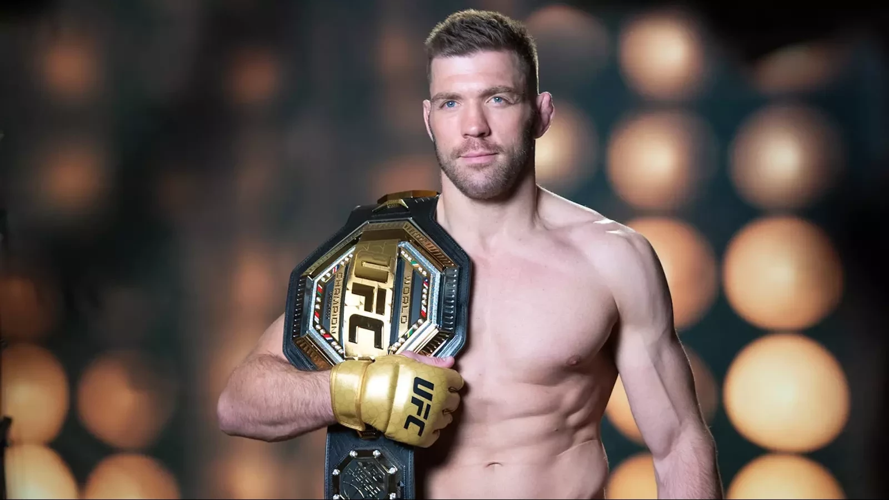
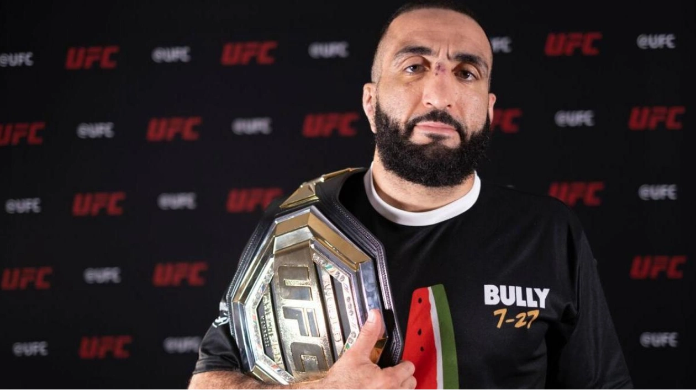
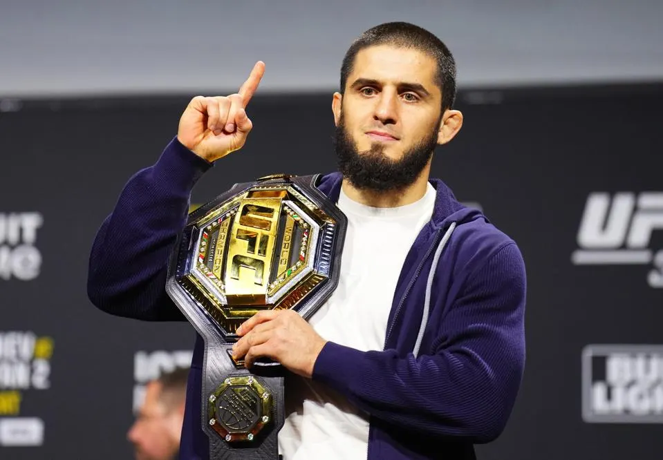
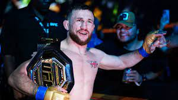
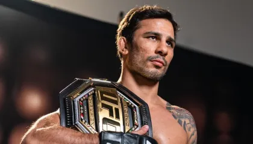

Ağır Siklet (Heavyweight ) Şampiyonu: Jon "Bones" Jones
MMA Karnesi: 28-1
Amerikalı bir MMA dövüşçüsüdür. UFC'nin en dominant dövüşçülerinden biri olarak kabul edilir. Çift siklet (Eski Hafif Ağır Siklet ve Aktif Ağır Siklet) şampiyonluğu vardır. Güçlü güreşi, etkileyici reach avantajı ve çok yönlü dövüş stiliyle tanınır. Ancak kariyeri boyunca doping ve disiplin sorunlarıyla da gündeme gelmiştir. Aynı zamanda büyük bir çoğunluğa göre UFC'de GOAT (Greatest Of All Time) yani, tüm zamanların en iyisi olarak nitelendirilir.
Hafif Ağır Siklet (Light Heavyweight) Şampiyonu: Magomed Ankalaev
MMA Karnesi: 21-1-1
Rus karma dövüş sanatçısı ve UFC hafif ağır sıklet şampiyonudur. Dağıstan kökenlidir. Güçlü striking yetenekleri ve sambo geçmişiyle tanınır.
Orta Siklet (Middleweight) Şampiyonu: "DDP" Dricus Du Plessis

MMA Karnesi: 23-2
Güney Afrikalı bir MMA dövüşçüsüdür ve UFC orta siklet şampiyonudur. Güçlü dövüş stili, agresifliği ve etkili knockout ve grappling yetenekleriyle tanınır. UFC'deki başarısı ve şampiyonluk unvanı ile dikkatleri üzerine çekmiştir.
Velter Siklet (Welterweight) Şampiyonu: Belal Muhammad

MMA Karnesi: 24-3
Filistin asıllı Amerikalı bir MMA dövüşçüsüdür ve UFC welterweight şampiyonudur. Dayanıklılığı, teknik dövüşü ve stratejik zekasıyla tanınır. Muhammad, güçlü bir mücadeleci olup, rakiplerine karşı sürekli baskı kurarak başarılı sonuçlar elde etmiş ve şampiyonluk unvanını kazanmıştır
Hafif Siklet (Lightweight) Şampiyonu: İslam Makhachev

MMA Karnesi: 27-1
Rus karma dövüş sanatçısı ve UFC hafif sıklet şampiyonudur. Dağıstan kökenli olup, Khabib Nurmagomedov’un yakın arkadaşı ve öğrencisidir. Güçlü güreşi, sambo yetenekleri ve kontrollü dövüş stiliyle tanınır. Hafif sıkletin en dominant isimlerinden biri olarak kabul edilir.
Tüy Siklet (Featherweight) Şampiyonu: Alexander "The Great" Volkanovski
MMA Karnesi: 27-4
Avustralyalı bir MMA dövüşçüsüdür ve UFC featherweight eski şampiyonudur. Dövüş kariyerinde güçlü boks yetenekleri, dayanıklılığı ve stratejik zekasıyla tanınır. Volkanovski, UFC featherweight şampiyonluğunu uzun süre savunmuş ve dövüşlerdeki yüksek tempoyu ve agresifliğiyle dikkat çekmiştir. Hâlâ UFC'de aktif olarak dövüşmektedir.
Horoz Siklet (Bantamweight) Şampiyonu: Merab "The Machine" Dvalishvili

MMA Karnesi: 19-4
Gürcü MMA dövüşçüsüdür ve UFC bantamweight şampiyonudur. Hızlı, dayanıklı ve agresif dövüş tarzıyla tanınır. Dvalishvili, rakiplerine büyük bir baskı uygulayarak dövüşlerde üstünlük kurma yeteneğiyle dikkat çeker ve şampiyonluk unvanını kazanmıştır.
Sinek Siklet (Flyweight) Şampiyonu: Alexandre "The Cannibal" Pantoja

MMA Karnesi: 29-5
Brezilyalı bir MMA dövüşçüsüdür ve UFC sineksiklet şampiyonudur. Yüksek dereceli bir grappler olarak tanınır ve dövüşlerinde submission yetenekleriyle öne çıkar. Pantoja, 2023 yılında UFC sineksiklet şampiyonluğunu kazanarak bu unvanı başarıyla savunmaktadır.
NOT: Şampiyonlar değiştikçe site güncellenmektedir.